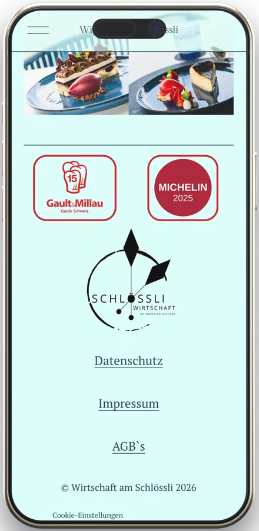
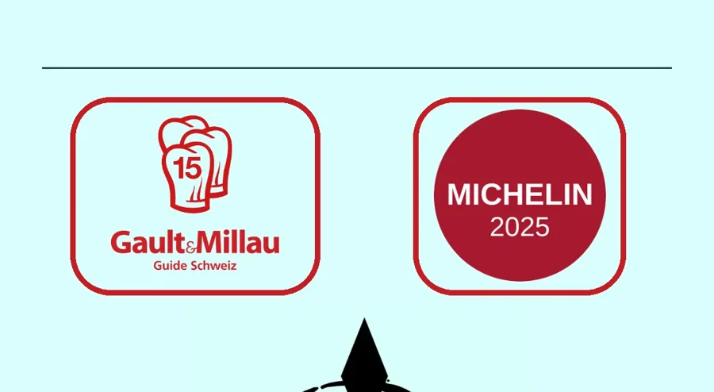

01
Die Entdeckung des Jahres steht nirgends auf Ihrer Seite
WoStartseite, ganz unten im Fuss. Am Telefon nach fast sechs Bildschirmhöhen (Siegel bei 4868 von 5466 Pixeln).
- Für Ihre Gäste
- Der Grund, der sie neugierig gemacht hat, fehlt genau dort, wo sie nachsehen.
- Für Ihr Haus
- Drei Auszeichnungen in einem Jahr arbeiten auf der eigenen Seite nicht mit.
- Was wir tun würden
- Auszeichnungen mit Satz und Quelle oben auf die Startseite und zu Monika Huber, die Plakette mit dem richtigen Jahr.